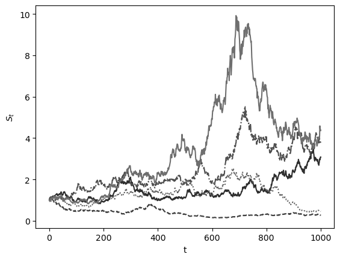
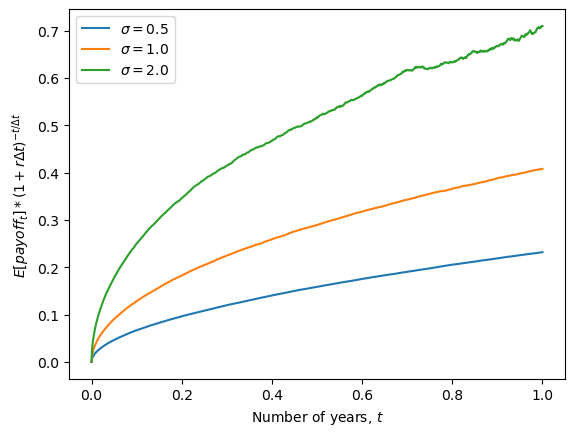

Numba#
Numba is a library which can speed up computations, especially loops, enormously. We look at two use cases: just-in-time compilation and parallelization.
1. Just-In-Time (JIT) compilation#
JIT means that a function you write in Python is not evaluated in its Python code. Rather, it is translated into very fast machine code the first time you run it (‘compilation’ step). Function calls are accelerated after you run it for the first time. This works well for Python functions using only base-Python or numpy code, especially if they contain loops. However, not all functions are JITable. Numba will throw an error upon execution in such cases.
We JIT a function by including the decorator @jit in front of the function definition.
Whenever we can JIT a loop, the speed of execution will be comparable to high-speed, vectorized calculations.
from numba import jit
import numpy as np
import matplotlib.pyplot as plt
Example 1: A function to sum the entries of a matrix.
def sum2d_slow(arr):
M, N = arr.shape
result = 0.0
for i in range(M):
for j in range(N):
result += arr[i, j]
return result
@jit(nopython=True)
def sum2d(arr):
M, N = arr.shape
result = 0.0
for i in range(M):
for j in range(N):
result += arr[i, j]
return result
arr = np.random.random((1000, 1000))
print(sum2d(arr))
500813.47465895314
%timeit sum2d(arr)
%timeit sum2d_slow(arr)
983 µs ± 65.8 µs per loop (mean ± std. dev. of 7 runs, 1,000 loops each)
94.4 ms ± 1.8 ms per loop (mean ± std. dev. of 7 runs, 10 loops each)
Example 2: A function to calculate the nth entry of the Fibonacci sequence x_n = x_{n-1} + x_{n-2} with x_{1}, x_2 = 1.
@jit(nopython=True)
def fibonacci(n):
if n <= 0:
return 0
elif n == 1:
return 1
else:
return fibonacci(n-1) + fibonacci(n-2)
print(fibonacci(10))
55
Example 3: A custom function to perform matrix multiplication.
@jit(nopython=True)
def matmul(A, B):
M, K = A.shape
K, N = B.shape
C = np.empty((M, N))
for i in range(M):
for j in range(N):
for k in range(K):
C[i, j] += A[i, k] * B[k, j]
return C
A = np.random.random((5, 5))
B = np.random.random((5, 5))
print(matmul(A, B))
[[2.98968204 1.98847909 1.61801679 2.50340159 2.25484186]
[1.29159912 1.11695596 1.09491006 1.49815718 0.92471361]
[2.29008386 1.92642715 1.1360947 1.94572225 1.61010675]
[1.00080451 0.60136262 0.6481075 0.89050315 0.79019492]
[1.61881542 1.28320473 0.95341038 1.50718031 1.11756129]]
Exercise: Time the functions in all examples and compare the runtime to a non-JIT’ed version.
2. Parallelization#
We can make use of out computers’ ability to perform multiple calculations at the same time with numba, too. To parallelize loops, the following two simple steps are needed:
- The decorator becomes
@jit(nopython=True, parallel=True) - All loops to be parallelized are called with
prangeobjects, instead of the familiarrange.
Parallelization works best in scenarios where tasks can be divided into independent units of work that can be executed concurrently without dependencies. This includes operations on large datasets, such as matrix multiplications, image processing, and simulations like Monte Carlo methods or random walks. It is particularly effective when the workload can be evenly distributed across multiple processors, minimizing the need for synchronization and communication between tasks. By leveraging parallelization, significant performance improvements can be achieved, especially in computationally intensive applications.
Here is an example for a parallelized matrix-multiplication:
from numba import prange
@jit(nopython=True, parallel=True)
def parallel_matmul(A, B):
M, K = A.shape
K, N = B.shape
C = np.zeros((M, N))
for i in prange(M):
for j in prange(N):
for k in range(K):
C[i, j] += A[i, k] * B[k, j]
return C
A = np.random.random((5, 5))
B = np.random.random((5, 5))
print(parallel_matmul(A, B))
[[0.42546991 0.1540311 0.16394572 0.60225408 0.73378924]
[0.69485696 0.80875058 0.72270807 1.59882819 1.8065876 ]
[0.63858342 0.59801137 0.79892044 1.15579666 1.04488927]
[0.62294144 1.04404476 1.31799181 1.57375161 1.29141532]
[0.79744389 0.77428444 1.21240957 1.3350469 0.99760936]]
%timeit matmul(A, B)
%timeit parallel_matmul(A, B)
509 ns ± 5.12 ns per loop (mean ± std. dev. of 7 runs, 1,000,000 loops each)
94.9 µs ± 2.69 µs per loop (mean ± std. dev. of 7 runs, 10,000 loops each)
Exercise: Parallel simulation of a brownian motion. The formula for a Geometric Brownian Motion (GBM) is given by:
where: - S_t is the stock price at time t - \mu is the drift coefficient (expected return) - \sigma is the volatility coefficient (standard deviation of returns) - dW_t is a Wiener process or Brownian motion
In its discrete form, the GBM can be expressed as:
where:
- \Delta t is the time increment
- Z_t is a standard normal random variable
This formula is commonly used in financial mathematics to model stock prices and other financial instruments.
Write a parallelized function GBM_sim which generates returns N brownian motion simulations of duration T each, and takes in the needed parameters. Which loops are easily parallelized and which are not?
@jit(nopython=True, parallel=True)
def GBM_sim(S0, mu, sigma, deltaT, T, N):
deltaT_sqrt = deltaT**0.5 # pre-compute this guy
increments_num = int(np.floor(T/deltaT) + 1) # need integer number of increments
log_GBMs = np.empty((N,increments_num))
for n in prange(N):
log_GBMs[n, 0] = np.log(S0)
for i in range(1, increments_num):
log_GBMs[n, i] = log_GBMs[n, i-1] + (mu - sigma**2 / 2) * deltaT + sigma * deltaT_sqrt * np.random.normal()
GBMs = np.exp(log_GBMs)
return GBMs
GBMs = GBM_sim(S0 = 1, mu = 0.08, sigma = 1, deltaT = 0.001, T = 1, N = 5)
Let’s plot some of these Brownian motions.
# Define shades of dark grey and different linestyles
colors = ['#2f2f2f', '#3f3f3f', '#4f4f4f', '#5f5f5f', '#6f6f6f', '#7f7f7f', '#8f8f8f', '#9f9f9f', '#afafaf', '#bfbfbf']
linestyles = ['-', '--', '-.', ':', '-', '--', '-.', ':', '-', '--']
for i in range(GBMs.shape[0]):
plt.plot(GBMs[i], color=colors[i % len(colors)], linestyle=linestyles[i % len(linestyles)])
plt.ylabel(r'$S_t$')
plt.xlabel(r't')
plt.show()

Let’s time the function:
%%timeit
GBM_sim(S0 = 1, mu = 0.08, sigma = 1, deltaT = 0.001, T = 1, N = 5000)
20 ms ± 387 µs per loop (mean ± std. dev. of 7 runs, 100 loops each)
Exercise: Write a function call_payout(price, strike), which gives you the value of a call option at maturity if the price of the underlying are given in prices and you have the right (but not the obligation) to buy the underlying for the strike price strike.
def call_payout(prices, strike):
payout = (prices - strike)
payout[payout < 0] = 0
return payout
Exercise: Write a function which simulates the mean expected payoffs of a call option on an asset initially priced at S_0 after T periods. Simulate the function for 100_000 paths per GBM run, and across \sigma \in \{0.5, 1, 2\}
def sim_payoff(S0 = 1, mu = 0.08, sigma = 1, deltaT = 0.001, T = 1, N = 10000, discount_rate=0.03):
GBMs = GBM_sim(S0, mu, sigma, deltaT, T, N)
mean_payoff = call_payout(GBMs, 1.0).mean(axis=0)
mean_payoff = mean_payoff / (1+discount_rate*deltaT) ** np.arange(T/deltaT+1)
return mean_payoff
mean_payoff = sim_payoff(S0 = 1, mu = 0.08, sigma = 0.5, deltaT = 0.001, T = 1, N = 100_000, discount_rate=0.08)
mean_payoff = mean_payoff[:,np.newaxis]
for i, sigma in enumerate((1., 2.)):
mean_payoff = np.append(mean_payoff, sim_payoff(S0 = 1, mu = 0.08, sigma = sigma, deltaT = 0.001, T = 1, N = 100_000, discount_rate=0.08)[:, np.newaxis], axis=1)
for i, sigma in enumerate((0.5, 1., 2.)):
plt.plot(np.linspace(0, 1, len(mean_payoff[:, i])), mean_payoff[:, i] , label = f"$\sigma = {sigma}$")
plt.ylabel(r'$E[payoff_t] * (1+r \Delta t)^{-t/\Delta t}$')
plt.xlabel(r'Number of years, $t$')
plt.legend()
plt.show()
